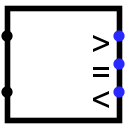

Comparator
Comparator
| Library: |
Arithmetic |
| Introduced: |
2.0 Beta 22 |
| Appearance: |
 |
Behavior
Compares two values, either as unsigned values or as two's-complement
values, depending on the Numeric Type attribute. Normally, one of the
outputs will be 1, and the other two outputs will be 0.
The comparison is performed starting at the most significant bits in
each number and descending downward in parallel until a location is
found where the two values disagree. If, however, an error value or
a floating value is encountered during this descent, then all outputs
will match that error or floating value.
Pins
- West edge, north end (input, bit width matches Data Bits attribute)
- The first of the two values to be compared.
- West edge, south end (input, bit width matches Data Bits attribute)
- The second of the two values to be compared.
- East edge, labeled > (output, bit width 1)
- 1 if the first input is greater than the second input, 0 if
the first input is less than or equal the second input.
- East edge, labeled = (output, bit width 1)
- 1 if the first input equals the second input, 0 if
the first input is not equal the second input.
- East edge, labeled < (output, bit width 1)
- 1 if the first input is less than the second input, 0 if
the first input is greater than or equal the second input.
Attributes
When the component is selected or being added,
Alt-0 through Alt-9 alter its Data Bits
attribute.
- Data Bits
- The bit width of the component's inputs.
Poke Tool Behavior
None.
Text Tool Behavior
None.
Back to Library Reference